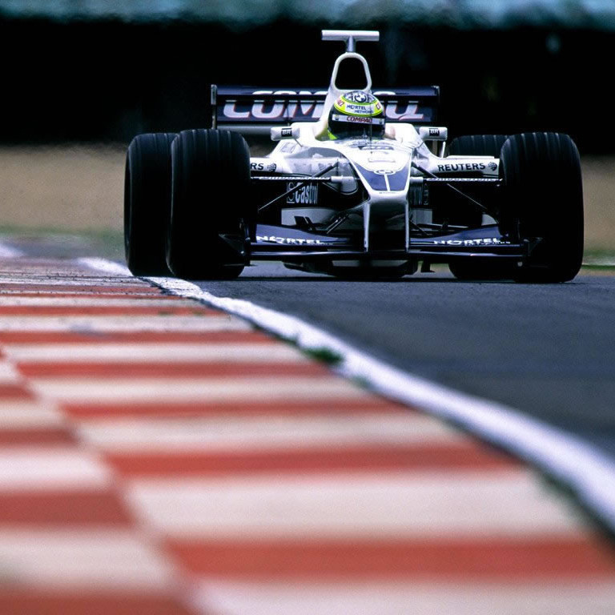

Suivez-nous

L'ACTU DU JOUR
FOOTBALL, Médias
Affaire Pierre Ménès : Canal + lance une enquête
DERNIÈRES ACTUS
Football, Médias - Ruiz accusé de sexisme
Basket, NBA - Tous les transferts de la deadline
Rugby, Tournoi des 6 Nations - La France a son destin en main
Tennis, WTA, Miami - Garcia laisse passer sa chance
MMA, UFC - Le championnat des plumes reporté
F1, Haas - Mick Schumacher vs Nikita Mazepin : le duel des rookies
Cyclisme, Trek-Segafredo - Le succès à deux têtes
Saut à skis, CM (H) - La lourde chute de Tande
Esport, LoL - La Karmine Corp championne de France
Coaching, Bien-être - Faut-il faire 10.000 pas par jour ?
Tous sports - Maxine Eouazan, une championne de gym sur "Koh-Lanta"
FOCUS
INTERVIEWS
FOCUS
FOOTBALL, Ligue 1, Angers
Moulin et Angers, c'est fini !
RUGBY, Tounoi, France-Écosse
Quelle stratégie pour les bleus ?
BASKET, NBA, Boston
Quel rôle pour Évan Fournier ?
CYCLISME, GP E3
Quels sont les favoris sur les pavés ?
FORMULE 1, Ferrari
Sainz peut-il bousculer Leclerc ?
PATINAGE, Mondiaux
Papadakis et Cizeron renonçent aux Mondiaux
INTERVIEWS
FOOTBALL, Témoignage
Souleymane Bamba : « Chaque chimio, c'est le prochain match »
GLACE, Portrait
Nathalie Péchalat, lame de fond
BOXE, Entrevue
Sarah Ourahmoune veut « dépoussiérer la fédération » de boxe
FORMULE 1, Déclaration
Alonso répond aux critiques
RUGBY, Paroles d'ex
Glas : « Une banane dans une chaussure de Merle »
ESPORT, Entretien
Domingo et Gaudu : « C'est tout bénef pour le cyclisme »
space
© La Team Sport 24/24 - 2021


:focal(1189x679:1191x677)/origin-imgresizer.eurosport.com/2021/03/11/3010181-61759348-2560-1440.jpg)